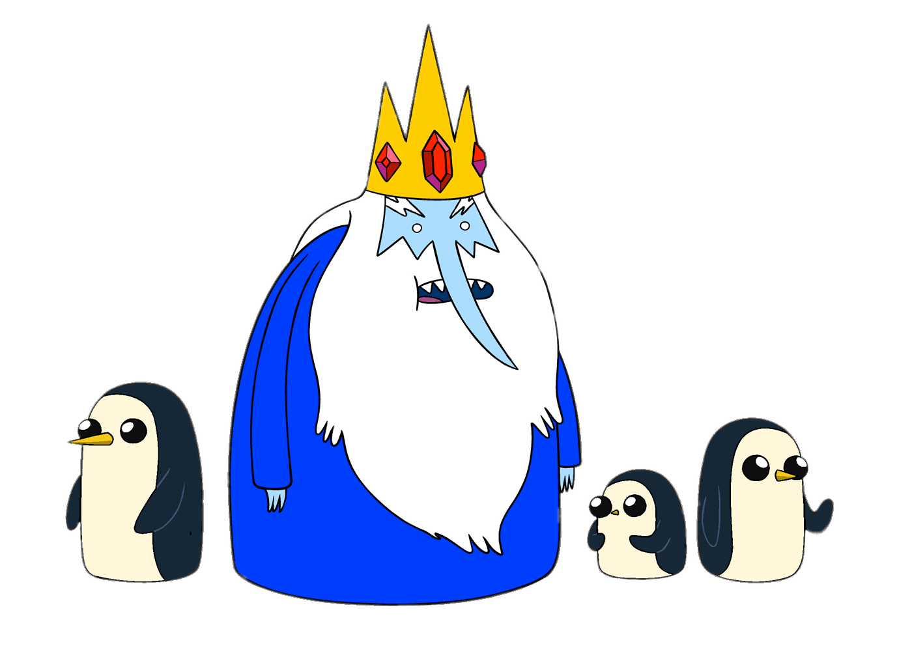

💛 Setembro Amarelo: A Vida é o Maior Bem!
📊 Estatísticas: O suicídio é a segunda principal causa de morte entre jovens de 15 a 29 anos no Brasil. É fundamental que todos nós estejamos cientes dessa realidade e busquemos formas de ajudar. Conversas abertas sobre saúde mental são vitais para que os jovens se sintam acolhidos e apoiados.
🥗 Receita Vegana: Salada colorida com quinoa e grão-de-bico. Essa receita não apenas nutre o corpo, mas também promove bem-estar mental, pois a alimentação saudável está ligada à saúde emocional. Experimente adicionar vegetais frescos e ervas para um sabor ainda mais intenso!
🧠 Perfil Epidemiológico: A depressão e os transtornos de ansiedade são os principais vilões que afetam a população. É crucial oferecer suporte e compreensão a quem sofre. O reconhecimento dos sinais de alerta pode salvar vidas e, por isso, é importante que amigos e familiares estejam atentos ao comportamento de quem amam.
🤝 Formas de Colaboração: Compartilhe informações sobre saúde mental, participe de campanhas e faça a diferença. A educação sobre saúde mental nas escolas e comunidades é essencial para desmistificar o tema e encorajar a busca por ajuda. Pequenas ações, como oferecer uma conversa amigável, podem fazer toda a diferença.
📅 História: Criado no Brasil em 2015, o Setembro Amarelo visa reduzir os índices de suicídio e dar atenção à saúde mental. Com eventos e campanhas de conscientização, a iniciativa busca trazer visibilidade a questões que muitas vezes são ignoradas, incentivando a empatia e o acolhimento.
💡 Dicas de Cuidado: Pratique a escuta ativa e busque apoio psicológico quando necessário. Incentive discussões abertas sobre sentimentos e desafios, criando um ambiente seguro e acolhedor. Nunca subestime o poder de uma conversa franca para fazer a diferença na vida de alguém.
🎀 Outubro Rosa: Prevenção é o Melhor Caminho!
📊 Estatísticas: O câncer de mama é o mais comum entre as mulheres no Brasil, representando quase 30% dos casos. A detecção precoce pode aumentar significativamente as chances de tratamento bem-sucedido. Por isso, a conscientização sobre a importância dos exames regulares é essencial.
🥑 Receita Vegana: Bowl de abacate com granola. Essa deliciosa combinação fornece nutrientes essenciais e antioxidantes que ajudam na prevenção de doenças. Incluir alimentos ricos em fibras e vitaminas é uma excelente maneira de cuidar da saúde em geral.
💁♀️ Perfil Epidemiológico: Mulheres com histórico familiar de câncer de mama têm risco elevado. Realizar exames periódicos é fundamental para a detecção precoce. Além disso, a autoexaminação mensal é uma prática que pode salvar vidas, permitindo que as mulheres conheçam seus corpos e identifiquem quaisquer mudanças.
🌸 Formas de Colaboração: Realize campanhas de conscientização, compartilhe informações sobre o autoexame e incentive a luta contra o câncer de mama. Organizar eventos comunitários e palestras sobre saúde pode criar uma rede de apoio entre as mulheres, promovendo a troca de informações e experiências.
📅 História: O Outubro Rosa nasceu nos Estados Unidos em 1990 e visa aumentar a conscientização sobre a importância da prevenção do câncer de mama. Desde então, tornou-se um movimento global, unindo pessoas em prol de uma causa comum e promovendo ações que salvam vidas.
💪 Autoexame: Aprenda a realizar o autoexame e incentive amigas a fazer o mesmo! Saber como e quando realizar o autoexame é crucial para a detecção precoce. A educação e o compartilhamento de informações são ferramentas poderosas na luta contra o câncer de mama.
🔵 Novembro Azul: Cuide da Sua Saúde Masculina!
📊 Estatísticas: O câncer de próstata é o segundo mais comum entre os homens no Brasil, com mais de 65 mil casos anuais. A conscientização sobre a importância de exames regulares é essencial, pois muitos homens relutam em buscar ajuda devido a tabus sociais. O diagnóstico precoce pode salvar vidas.
🍛 Receita Vegana: Curry de grão-de-bico com arroz integral. Essa receita é não apenas nutritiva, mas também deliciosa, proporcionando energia e vitalidade. Alimentos ricos em zinco e fibras são benéficos para a saúde masculina, contribuindo para a prevenção de doenças.
🧔 Perfil Epidemiológico: Homens com mais de 50 anos devem estar atentos aos sinais e realizar exames preventivos. A educação sobre a saúde masculina é crucial para quebrar estigmas e incentivar a procura por cuidados médicos regulares.
🤝 Formas de Colaboração: Apoie programas de rastreio, incentive a realização de exames e compartilhe a importância da saúde masculina. Participar de grupos de discussão e eventos pode ajudar a aumentar a conscientização e promover hábitos saudáveis entre os homens.
📅 História: O Novembro Azul foi criado em 2003 na Austrália e visa aumentar a conscientização sobre a saúde do homem, especialmente o câncer de próstata. Desde então, o movimento se espalhou pelo mundo, trazendo visibilidade à saúde masculina e incentivando ações preventivas.
🩺 Importância dos Exames: Exames regulares podem salvar vidas. Informe-se sobre os testes disponíveis e incentive amigos a fazer o mesmo. A abertura para discussões sobre saúde é fundamental para a prevenção de doenças e para o fortalecimento da saúde mental.
